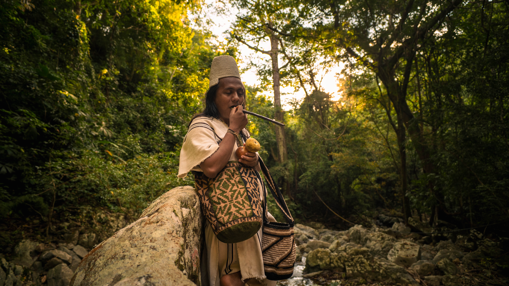
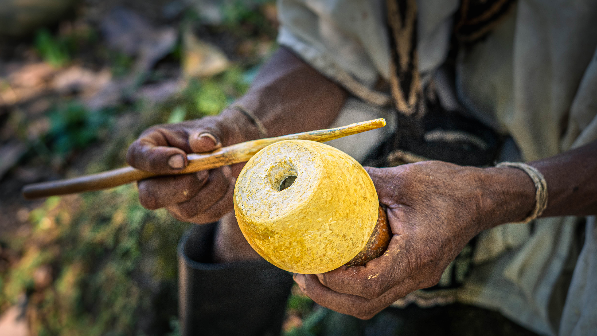

En ese lugar en las horas de la mañana de cualquier día de verano o invierno se lograba percibir la insinuación apreciativa de la presencia de aquellas personas anónimas que se relataba seguir aún en aquel entonces, ya sea en espíritu o no y, el auge de su reconocimiento era vigente desde los tiempos inexplicablemente remotos e incluso antes de que todo pasará.
Hasta el sol de hoy sigue siéndolo como en la vibración a través de la señal cósmica, pero debamos admitir que en algunas partes más está presente que en otras, quizás porque la aprecian más.
Para definir en cómo se mueven estas personas desde el alma, podríamos comenzar diciendo que su actitud y comportamiento son realmente característicos, calmadas, calladas y mayormente se mantienen aisladas de la multitud a menos que las necesiten.
Se argumentaba que durante todo el día solían permanecer en soledad. En los años recientes he tenido la certeza de saber si se sentaban sobre las piedras de unos pocos metros de distancia de donde vivía en familia.
Las formas de conectarse con el universo seguían o siguen insólitamente en lucha, de pie, por su compromiso de dar razonabilidad a la existencia, ante las ideas absurdas que vienen y van.
Sus expresiones se limitan ante los demás. Suelen ser reservados en su totalidad y se mantienen en una profunda exploración interna con aquellos que tienen el mismo papel de entendimiento donde nada es visible y tangible.
{kind=link}

Sin lugar a dudas, lo más valioso hasta ahora, como para la importancia de su existencia, es que, se piensa innegablemente seguir bajo su propia filosofía que se sustenta o fundamenta sobre la madre tierra. Ellos llevan aún en su espíritu intacto este conocimiento hasta el fin del mundo. Todo esto podemos aducir, sus generaciones, de lo que fue en aquella época que jamás conocimos.
Los guardianes de las montañas y de todo lo que existe meditaban al viajar con sus bastones de oro, o no requerían tal meditación, cuando simplemente sentían que se les anunciaba o más bien el anuncio eran ellos mismos, era su tarea de vivir algo así, conviviendo con cada partícula elemental que cohabita.
Con solo intuir hacían lo que el anuncio indicaba, aquellas personas. Notaban sentir lo que debían hacer con cualquier movimiento que presentase en los minúsculos relevos de almas fluviales y pasajeras, pero solo por la revelación de su movimiento. Todo acontece en la idea de imaginar cómo se efectuaría la teletransporte de una persona desde la mente a otro lugar de la realidad.
Recorriendo desde con la mente a los diferentes lugares para convencerse de todo lo que se le anuncia desde su intuición, y como es de conocer, solo es el comienzo al conocimiento como deber del hombre. Al hacerlo para compensar su existencia con lo que lo mantiene con vida.

Los sabios eran más sabios si no permitían incursionar en sus ideas las influencias externas que contradecían, afirmando que cada cosa tenía su lugar. Las cualidades inherentes de una cultura y sus principios se preveían ser más íntegros.
{kind=link}

De lo contrario, el precipicio de aquel mundo sería un desastre y caótico, que fácilmente se iría al abismo fuera del control alguno, complejo de entenderlo ante la envergadura de una mente sin procedencia. Y todo ser que se haya permitido florecer debiera ser aceptado para su florecimiento.